2021年北京市中考化学真题 原卷解析
2021年北京市中考化学试卷
一、本部分共25题，每题1分，共25分。在每题列出的四个选项中，选出最符合题目要求的一项。
1．空气中体积分数约为78%的气体是（ ）
A．氮气B．氧气C．二氧化碳D．稀有气体
【分析】空气中各成分的体积分数分别是：氮气78%、氧气21%、稀有气体0.94%、二氧化碳0.03%、其它气体和杂质0.03%；空气的成分主要以氮气和氧气为主，氧气约占五分之一，氮气约占五分之四。
【解答】解：A、氮气占78%，故选项正确；
B、氧气占21%，故选项错误；
C、二氧化碳占0.03%，故选项错误；
D、稀有气体占0.94%，故选项错误。
故选：A。
【点评】本考点考查了空气中各种气体的含量，同学们要加强记忆有关的知识点，在理解的基础上加以应用，本考点基础性比较强，主要出现在选择题和填空题中。
2．下列物质在O2中燃烧，火星四射，生成黑色固体的是（ ）
A．木炭B．镁条C．蜡烛D．铁丝
【分析】A、根据木炭在氧气中燃烧的现象进行分析判断。
B、根据镁条在氧气中燃烧的现象进行分析判断。
C、根据蜡烛在氧气中燃烧的现象进行分析判断。
D、根据铁丝在氧气中燃烧的现象进行分析判断。
【解答】解：A、木炭在氧气中燃烧，发出白光，生成能使澄清石灰水变浑浊的气体，故选项错误。
B、镁条在氧气中燃烧，发出耀眼的白光，生成一种白色固体，故选项错误。
C、蜡烛在氧气中燃烧，发出白光，生成气体，故选项错误。
D、铁丝在氧气中剧烈燃烧，火星四射，放出大量的热，生成一种黑色固体，故选项正确。
故选：D。
【点评】本题难度不大，掌握常见物质燃烧的现象即可正确解答，在描述物质燃烧的现象时，需要注意光和火焰、烟和雾的区别。
3．将CO2通入下列液体中，能产生白色沉淀的是（ ）
A．水B．稀硫酸C．食盐水D．澄清石灰水
【分析】根据二氧化碳的性质，判断下列物质是否能与二氧化碳发生反应，若能反应还需要判断反应是否有明显的实验现象。
【解答】解：A、二氧化碳既能溶于水又能与水发生反应，但二氧化碳与水反应生成碳酸，不能产生白色沉淀，说法错误；
B、二氧化碳不能与稀硫酸反应，不能产生白色沉淀，说法错误；
C、二氧化碳不能与食盐水反应，不能产生白色沉淀，说法错误；
D、二氧化碳通入澄清石灰水生成不溶于水的碳酸钙而使澄清石灰水变浑浊，能产生白色沉淀，说法正确；
故选：D。
【点评】二氧化碳通入澄清石灰水，石灰水变浑浊，实验室通常利用这一反应检验气体二氧化碳。
4．下列物质能用作氮肥的是（ ）
A．KClB．K2CO3C．NH4ClD．Ca3（PO4）2
【分析】含有氮元素的化肥称为氮肥，氮肥能使作物枝叶茂盛，叶色浓绿．并且能提高农作物的产量，含有磷元素的化肥称为磷肥，含有钾元素的化肥称为钾肥．在N、P、K三种元素中含有两种或两种以上营养元素的称为复合肥料．
【解答】解：A、KCl中含有钾元素，属于钾肥，故A错；
B、K2CO3中含有钾元素，属于钾肥，故B错；
C、NH4Cl中只含有氮、磷、钾元素中的氮元素，属于氮肥，故C正确；
D、Ca3（PO4）2只含有氮、磷、钾元素中的磷元素，属于磷肥，故D错。
故选：C。
【点评】在N、P、K三种元素中含有两种或两种以上营养元素的称为复合肥料，含有氮元素的属于氮肥．
5．下列物质属于氧化物的是（ ）
A．O2B．CaOC．H2SO4D．KMnO4
【分析】物质分为混合物和纯净物，混合物是由两种或两种以上的物质组成；纯净物是由一种物质组成。纯净物又分为单质和化合物。由同种元素组成的纯净物叫单质；由两种或两种以上的元素组成的纯净物叫化合物。氧化物是指由两种元素组成的化合物中，其中一种元素是氧元素，CaO属于氧化物。
【解答】解：A、O2属于纯净物中的单质，故选项错误；
B、氧化物是指由两种元素组成的化合物中，其中一种元素是氧元素，CaO属于氧化物；故选项正确；
C、H2SO4属于化合物，但不是氧化物，因为有三种元素；故选项错误；
D、KMnO4属于化合物，但不是氧化物，因为有三种元素；故选项错误；
故选：B。
【点评】本考点考查了物质的分类，要加强记忆混合物、纯净物、单质、化合物、氧化物等基本概念，并能够区分应用。本考点的基础性比较强，主要出现在选择题和填空题中。
6．下列仪器不能加热的是（ ）
A．烧杯B．试管C．量筒D．燃烧匙
【分析】根据常见化学仪器的使用方法和注意事项，进行解答本题。
【解答】解：A、烧杯不能直接燃烧，需要垫石棉网，故不符合题意。
B、试管能直接加热，故不符合题意。
C、量筒不能加热，故符合题意。
D、燃烧匙能直接加热，故不符合题意。
故选：C。
【点评】实验室中一些仪器可以直接加热，有些需垫石棉网，有些根本就不能被加热。烧杯、烧瓶不能直接加热，需垫石棉网。
7．下列物质含有氢分子的是（ ）
A．Ca（OH）2B．H2CO3C．H2O2D．H2
【分析】根据物质的组成和物质的构成可知，含有氢分子的物质中必须含有氢气单质，注意含氢元素的物质中不一定含有氢分子。
【解答】解：A．氢氧化钙是由离子构成的，含有氢元素，但不含有氢分子，故A错误；
B．H2CO3中含有氢元素，分子中含有氢原子，但不含有氢分子，故B错误；
C．H2O2中含有氢元素，分子中含有氢原子，但不含有氢分子，故C错误；
D．H2由大量的氢气分子构成，故D正确。
故选：D。
【点评】本题考查物质的构成，了解分子、原子、离子、元素与物质之间的关系即可解答，难度不大。
8．下列物质能除铁锈的是（ ）
A．盐酸B．植物油C．NaOH溶液D．食盐水
【分析】根据铁锈的主要成分是氧化铁，与酸反应生成铁盐和水，进行分析判断。
【解答】解：铁锈的主要成分是氧化铁，盐酸与氧化铁反应生成可溶性的氯化铁，从而除去铁锈。
故选：A。
【点评】本题难度不大，主要考查了铁锈的主要成分，掌握酸的化学性质和除锈原理是解题的关键。
9．电解水实验如图，下列说法不正确的是（ ）
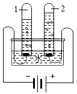
A．试管1中得到H2B．水由H2、O2构成
C．水发生了分解反应D．水由氢、氧元素组成
【分析】根据电解水时“正氧负氢、氢二氧一”、发生的反应、结论分析有关的说法。
【解答】解：A、由电解水时“正氧负氢、氢二氧一”可知，试管1中得到的气体是电源的负极生成的H2，故A说法正确；
B、电解水生成了氢气和氧气，说明了水是由氢、氧元素组成，不能说明水由H2、O2构成，故B说法不正确；
C、电解水生成了氢气和氧气，由一种物质生成了两种物质，水发生了分解反应，故C说法正确；
D、电解水生成了氢气和氧气，说明了水是由氢、氧元素组成，故D说法正确。
故选：B。
【点评】本题主要考查了电解水的实验，了解电解水实验的现象、结论、发生的反应等知识即可分析解答。
10．下列元素中，人体摄入过低会引起贫血的是（ ）
A．铁B．碘C．锌D．钙
【分析】根据铁元素的生理功能与缺乏症进行分析。
【解答】解：缺少铁元素会引起贫血；
故选：A。
【点评】此题主要考查元素与人类的关系，正确掌握各元素的生理功能与缺乏症是解答此题的关键。
11．如图所示的图标表示（ ）
A．禁止吸烟B．禁止燃放鞭炮
C．禁止带火种D．禁止堆放易燃物
【分析】根据图标的含义考虑。
【解答】解：如图所示的图标表示禁止燃放鞭炮。
故选：B。
【点评】解答本题关键是熟悉图标表示的意义。
12．下列H2的性质中，属于化学性质的是（ ）
A．难溶于水B．无色气体C．能燃烧D．熔点低
【分析】物质在化学变化中表现出来的性质叫化学性质，如可燃性、助燃性、氧化性、还原性、酸碱性、稳定性等；物质不需要发生化学变化就表现出来的性质，叫物理性质；物理性质经常表现为：颜色、状态、气味、密度、硬度、熔点、沸点、导电性、导热性、溶解性、挥发性、吸附性等
【解答】解：氢气难溶于水、无色无味、熔点低，都不需要发生化学变化就表现出来，属于物理性质，氢气能燃烧，因为氢气有可燃性，属于化学性质。
故选：C。
【点评】本考点考查了物理性质和化学性质的区分，要记忆有关氢气性质，并能够在比较的基础上进行应用，本考点的基础性比较强，主要出现在选择题和填空题中。
13．如表列出了某果仁的营养分，其中含量最高的营养素是（ ）
项目 | 每100g |
蛋白质 | 13.2g |
脂肪 | 70.1g |
碳水化合物 | 13.0g |
钠 | 216mg |
A．蛋白质B．糖类C．油脂D．无机盐
【分析】根据题干信息回答。
【解答】解根据表中营养素含量数据可知，脂肪含量最高，脂肪属于油脂。
故选：C。
【点评】本题是一个信息题，解题时根据题干信息、所需知识来分析解答即可。
14．一些物质的pH范围如下，其中呈碱性的是（ ）
A．柠檬汁（2﹣3）B．酱油（4﹣5）
C．西瓜汁（5﹣6）D．洗发水（8﹣9）
【分析】当溶液的pH等于7时，呈中性；当溶液的pH小于7时，呈酸性；当溶液的pH大于7时，呈碱性；进行分析判断。
【解答】解：A.柠檬汁的pH为2～3，小于7，显酸性，故选项A错误。
B.酱油的pH为4～5，小于7，显酸性，故选项B错误。
C.西瓜汁的pH为5～6，小于7，显酸性，故选项C错误。
D.洗发水的pH为8～9，大于7，显碱性，故选项D正确。
故选：D。
【点评】本题难度不大，掌握溶液的酸碱性和溶液pH大小之间的关系是正确解答此类题的关键。
15．下列物质属于有机化合物的是（ ）
A．NaClB．NaOHC．HClD．CH4
【分析】物质分为混合物和纯净物，混合物是由两种或两种以上的物质组成；纯净物是由一种物质组成。纯净物又分为单质和化合物。由同种元素组成的纯净物叫单质；由两种或两种以上的元素组成的纯净物叫化合物。氧化物是指由两种元素组成的化合物中，其中一种元素是氧元素。含碳的化合物叫有机化合物，简称有机物，其中一氧化碳、二氧化碳、碳酸盐除外。
【解答】解：A、NaCl属于无机化合物，故选项错误；
B、NaOH属于无机化合物，故选项错误；
C、HCl属于无机化合物，故选项错误；
D、含碳的化合物叫有机化合物，简称有机物；CH4属于最简单的有机化合物，故选项正确；
故选：D。
【点评】本考点考查了物质的分类，要加强记忆有机物与无机物的基本概念，并能够区分应用。本考点的基础性比较强，主要出现在选择题和填空题中。
我国冶炼金属的历史悠久。回答16～18问题。
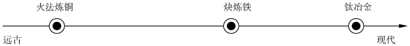
16．远古时期火法炼铜的原料是孔雀石【主要成分为Cu2（OH）2CO3】，组成Cu2（OH）2CO3的元素种类为（ ）
A．3种B．4种C．5种D．6种
【分析】从物质组成的元素种类进行分析。
【解答】解：Cu2（OH）2CO3中含有铜、氧、氢、碳4种元素；
故选：B。
【点评】本题考查的是基础知识，难度不大。
17．块炼铁以炭和铁矿石为原料，反应之一为Fe2O3+3CO 2Fe+3CO2，该反应中，化合价降低的元素是（ ）
2Fe+3CO2，该反应中，化合价降低的元素是（ ）
A．铁元素B．碳元素
C．氧元素D．铁元素和碳元素
【分析】根据单质中元素的化合价为0、在化合物中正负化合价的代数和为零，进行分析解答。
【解答】解：由Fe2O3+3CO2Fe+3CO2，该反应前后，各元素的化合价变化分别是：碳元素由+2→+4；铁元素由+3→0；反应前后，氧元素的化合价均为﹣2价，氧元素的化合价不变，则该反应中，化合价降低的元素是铁元素。
故选：A。
【点评】本题难度不大，掌握单质中元素的化合价为0、在化合物中正负化合价代数和为零并能灵活运用是正确解答本题的关键。
18．冶炼钛（Ti）的反应之一为2Mg+TiCl4 Ti+2MgCl2，该反应属于（ ）
Ti+2MgCl2，该反应属于（ ）
A．化合反应B．分解反应C．置换反应D．复分解反应
【分析】根据基本反应类型的判断方法来分析解答．
【解答】解：反应2Mg+TiCl4Ti+2MgCl2是由一种单质与一种化合物反应生成另一种单质与另一种化合物，属于置换反应。
故选：C。
【点评】化学反应的四种基本类型：化合、分解、置换、复分解
化合反应：由两种或两种以上的物质生成另一种物质的反应，叫做化合反应。A+B＝C
分解反应：由一种物质生成两种或两种以上的其它物质的化学反应，叫做分解反应。A＝B+C
置换反应：一种单质与另一种化合物起反应生成另一种单质和化合物的反应叫置换反应。A+BC＝AC+B
复分解反应：两种化合物相互交换离子生成另外两种化合物的反应叫复分解反应。AB+CD＝AD+CB
制作景泰蓝的釉料中常含钴元素。钴元素在元素周期表中的信息如图。回答19～20问题。

19．下列有关钴元素的说法不正确的是（ ）
A．原子序数是27B．属于非金属元素
C．元素符号是CoD．相对原子质量为58.93
【分析】元素周期表中，每种元素占据的空格中，左上角是原子序数，右上角是元素符号，中间是元素名称，下面是相对原子质量；原子中，核电荷数＝核内质子数＝核外电子数＝原子序数；除汞外，金属元素的名称都带金字旁，非金属元素的名称不带金字旁；相对原子质量单位不是g。
【解答】解：A.左上角的数值表示该元素的原子序数，因此钴元素的原子序数为27，选项说法正确；
B.由元素名称的汉字偏旁可知，钴元素属于金属元素，选项说法错误；
C.由元素周期表的信息可知，钴元素的元素符号是Co，选项说法正确；
D.由元素周期表的信息可知，下方的数值表示钴元素的相对原子质量，即相对原子质量为58.93，选项说法正确。
故选：B。
【点评】要想解答好这类题目，要理解和熟记元素周期表的特点及其应用，以及与之相关的知识。
20．钴原子的核外电子数是（ ）
A．27B．32C．59D．86
【分析】根据元素周期表的信息以及原子中，原子序数＝质子数＝核外电子数来分析。
【解答】解：由元素周期表的信息可知，钴元素的原子序数为27，因为原子中，原子序数＝质子数＝核外电子数，所以钴原子的核外电子数是27。
故选：A。
【点评】要想解答好这类题目，要理解和熟记元素周期表的特点及其应用，以及与之相关的知识。
用MgCl2溶液喷洒路面可融雪、防尘。20℃时，按下表数据配制溶液，回答21～23题。
序号 | ① | ② | ③ | ④ |
MgCl2的质量/g | 30 | 40 | 50 | 60 |
水的质量/g | 100 | 100 | 100 | 100 |
（已知：20℃时，MgCl2的溶解度为54.6g）
21．所得溶液中，溶质与溶剂的质量比为1：2的是（ ）
A．①B．②C．③D．④
【分析】根据20℃时MgCl2的溶解度数值和溶质与溶剂的质量比进行分析判断。
【解答】解：因为20℃时，MgCl2的溶解度为54.6g，所以①②③都属于不饱和溶液，而只有③溶液中溶质与溶剂的质量比为50：100＝1：2。
故选：C。
【点评】此题考查溶解度与溶解性问题，关键是根据溶解度判断是否是饱和溶液解答。
22．①中溶质的质量分数约为（ ）
A．23%B．30%C．35%D．43%
【分析】根据溶液中，溶质的质量分数＝ ×100%来分析。
×100%来分析。
【解答】解：已知：20℃时，MgCl2的溶解度为54.6g。因此，20℃时，将30g氯化镁放入到100g水充分搅拌得到的是该温度下，氯化镁的不饱和溶液，溶液中溶质的质量分数为： ×100%≈23%。
×100%≈23%。
故选：A。
【点评】本题考查了溶质质量分数的计算方法，难度不大。
23．所得溶液中，属于饱和溶液的是（ ）
A．①B．②C．③D．④
【分析】根据溶解度分析即可。
【解答】解：因为20℃时，MgCl2的溶解度为54.6g，即20℃时，100g水中最多溶解54.6gMgCl2，又因为60g＞54.6g，所以属于饱和溶液的是④。
故选：D。
【点评】此题考查溶解性与溶解度等问题，关键是根据溶解度的大小判断。
24．用如图装置可验证空气中O2的含量。下列现象能表明O2含量的是（ ）

A．集气瓶中产生大量白烟
B．红磷燃烧一段时间后熄灭
C．烧杯中的水倒吸进入集气瓶
D．集气瓶中水面最终上升至1处
【分析】根据实验的现象来分析。
【解答】解：A、集气瓶中产生大量白烟，只能说明五氧化二磷是白色固体，不能证明空气中O2的含量，说法错误；
B、红磷燃烧一段时间后熄灭，说明氧气耗尽，不能证明空气中O2的含量，说法错误；
C、烧杯中的水倒吸进入集气瓶，说明瓶内气压降低，但不能证明空气中O2的含量，说法错误；
D、瓶中液面最终上升至1处，说明氧气约占空气总体积的 ，能证明空气中O2的含量，说法正确；
，能证明空气中O2的含量，说法正确；
故选：D。
【点评】本题难度不大，掌握用燃烧法测定空气中氧气含量的实验原理、注意事项等是正确解答是关键。
25．实验研究铁锈蚀影响因素，记录如下。下列分析不正确的是（ ）
实验装置 | 序号 | 其他试剂 | 200s时O2的含量 |

| ① | 干燥剂 | 21% |
② | 10滴水 | 15% |
③ | 10滴水和1.0g食盐 | 8% |
A．②③中O2含量减少表明铁已锈蚀
B．①②证明水对铁锈蚀有影响
C．②③证明食盐能加快铁锈蚀
D．①②③证明炭粉对铁锈蚀有影响
【分析】根据铁在与氧气和水蒸气同时接触时会发生锈蚀来分析。
【解答】解：①加入干燥剂后，铁粉不会锈蚀；②加入10滴水后，铁粉慢慢锈蚀；③加入10滴水和1.0g食盐，铁粉很快锈蚀。
A.铁粉锈蚀需要消耗氧气，所以②③中O2含量减少表明铁已锈蚀，选项A说法正确；
B.①加入干燥剂后，铁粉不会锈蚀；②加入10滴水后，铁粉慢慢锈蚀，因此①②证明水对铁锈蚀有影响，选项B说法正确；
C.②加入10滴水后，铁粉慢慢锈蚀；③加入10滴水和1.0g食盐，铁粉很快锈蚀，因此②③证明食盐能加快铁锈蚀，选项C说法正确；
D.对比三个实验，并不能证明炭粉对铁锈蚀有影响。选项D说法错误。
故选：D。
【点评】合理设计实验，科学地进行实验、分析实验，是得出正确实验结论的前提，因此要学会设计实验、进行实验、分析实验，为学好化学知识奠定基础。
二、第二部分本部分共14题，共45分。【生活观象解释】
26．从A或B两题中任选一个作答，若两题均作答，按A计分。
A.NaHCO3的用途之一是 治疗胃酸过多（合理即可） 。 | B.NaHCO3的俗名是 小苏打 。 |
【分析】A.根据物质的性质与用途来分析；
B.根据物质的名称、俗称与化学式来分析。
【解答】解：A.碳酸氢钠能与胃液中的盐酸反应，所以可用于治疗胃酸过多；碳酸氢钠受热时会分解产生二氧化碳气体，所以可用作发酵粉的主要成分；
故填：治疗胃酸过多（合理即可）；
B.NaHCO3是碳酸氢钠的化学式，碳酸氢钠俗称小苏打；
故填：小苏打。
【点评】本题考查了物质的名称、俗称与化学式，物质的性质与用途，难度不大，掌握常见物质的相关知识是解题的关键。
27．（3分）我国提出2060年前实现碳中和，彰显了负责任大国的作为与担当。
（1）现阶段的能源结构仍以化石燃料为主，化石燃料包括煤、 石油 和天然气。
（2）下列燃料在O2中燃烧时，不会产生CO2的是 BC （填序号）。
A．天然气
B．氢气
C．肼（N2H4）
（3）捕集、利用和封存CO2是实现碳中和的一种途径。矿物质碳化封存的反应之一是氧化镁与CO2反应生成碳酸镁，该反应的化学方程式为 MgO+CO2＝MgCO3 。
【分析】（1）根据化石燃料的种类来分析；
（2）根据质量守恒定律来分析；
（3）根据化学反应的原理来分析。
【解答】解：（1）化石燃料包括煤、石油和天然气；故填：石油；
（2）A．天然气的主要成分是甲烷，甲烷燃烧会生成二氧化碳；
B．氢气燃烧只生成水；
C．肼（N2H4）燃烧生成水和含氮的物质，不会生成二氧化碳；
故填：BC；
（3）氧化镁与CO2反应生成碳酸镁，该反应的化学方程式为MgO+CO2＝MgCO3；故填：MgO+CO2＝MgCO3。
【点评】本题考查的属于基础知识，掌握化石燃料的种类、物质燃烧的产物以及化学方程式的写法是解题的关键。
28．（3分）H2O2溶液常用作的消毒剂。
（1）H2O2溶液属于 混合物 （填“混合物”或“纯净物”）。
（2）H2O2不稳定，易分解。H2O2分解的化学方程式为 2H2O2＝2H2O+O2↑ 。
（3）用3%的H2O2溶液对不同金属进行腐蚀性实验，结果如下：
金属种类 | 不锈钢片 | 铝片 | 铜片 |
腐蚀速度（mg/h） | 0.001 | 0.010 | 0.404 |
下列金属制品用该溶液浸泡消毒时，最易被腐蚀的是 C （填序号）。
A．不锈钢锅
B．铝盆
C．铜火锅
【分析】（1）依据过氧化氢溶液的组成分析；
（2）依据过氧化氢分解生成水和氧气分析；
（3）依据用3%的H2O2溶液对不同金属进行腐蚀性实验的数据分析。
【解答】解：（1）过氧化氢溶液中含有H2O和H2O2，则H2O2溶液属于混合物；故填：混合物；
（2）过氧化氢分解生成水和氧气，则化学反应方程式为2H2O2＝2H2O+O2↑；故填：2H2O2＝2H2O+O2↑。
（3）分析用3%的H2O2溶液对不同金属进行腐蚀性实验的数据可知，铜片腐蚀速度最快，则最易被腐蚀的是铜火锅，故填：C。
【点评】此题主要考查常见物质的性质和物质类别的判别，主要是利用实验数据及常见物质的性质和组成分析和解决有关问题，结合各方面的条件得出正确结论。
三、【科普阅读理解】
29．（6分）阅读下面科普短文。
碳元素是人类接触和利用最早的元素之一。由碳元素组成的单质可分为无定形碳、过液态碳和晶形碳三大类，如图1。
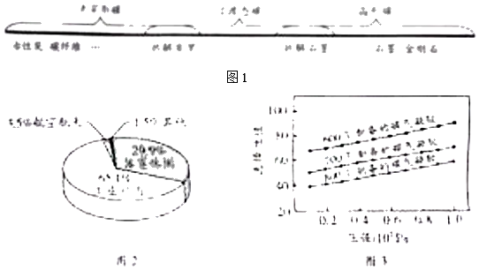
石墨是制铅笔芯的原料之一，在16世纪被发现后，曾被误认为是含铅的物质。直到18世纪，化学家将石墨与KNO3共熔后产生CO2，才确定了它是含碳的物质。
碳纤维既有碳材料的固有本质特性，又有纺织纤维的柔软可加工性，综合性能优异。目前，我国已形成碳纤维生产、碳纤维复合材料成型，应用等产业链，碳纤维复合材料应用领域分布如图2。
科学界不断研发出新型碳材料，碳气凝胶就是其中一种。碳气凝胶具有优良的吸附性能，在环境净化中发挥重要作用。我国科研人员在不同温度下制备了三种碳气凝胶样品，比较其对CO2的选择性吸附性能。他们在不同压强下测定了上述样品对混合气体中CO2吸附的选择性值，实验结果如图3。图中选择性值越高，表明碳气凝胶对CO2的选择性吸附性能越好。
随着科学技术的发展，碳材料的潜能不断被激发，应用领域越来越广泛。
依据文章内容回答下列问题：
（1）金刚石属于 C （填序号）。
A．无定形碳
B．过渡态碳
C．晶形碳
（2）石墨与KNO3共熔，能发生如下反应，配平该反应的化学方程式：5C+4KNO3 2 K2O+ 2 N2↑+ 5 CO2↑。
（3）由图2可知，我国碳纤维复合材料应用占比最高的领域是 工业应用 。
（4）判断下列说法是否正确（填“对”或“错”）。
①石墨是一种含铅的物质 错 。
②碳材料其有广阔的应用和发展前景 对 。
（5）对比图3中三条曲线，得到的实验结论是 温度越低，压强越大，碳气凝胶对CO2的选择性吸附性能越好 。
【分析】（1）根据金刚石的结构分析；
（2）根据化学方程式进行配平方法分析；
（3）根据我国碳纤维复合材料的应用分析；
（4）①根据石墨的组成分析；
②根据碳材料的应用和发展前景分析。
（5）对比图3中三条曲线，分析碳气凝胶对CO2的吸附性。
【解答】解：（1）金刚石属于晶形碳，故选C；
（2）石墨与KNO3共熔，能发生如下反应，反应的化学方程式：5C+4KNO3 2K2O+2N2↑+5CO2↑，故填入：2、2、5。
（3）由图2可知，我国碳纤维复合材料应用占比最高的领域是工业应用。
（4）①石墨是一种含碳的物质，故说法错。
②碳材料其有广阔的应用和发展前景，故说法对。
（5）对比图3中三条曲线，分析碳气凝胶对CO2的吸附性，得到的实验结论是：温度越低，压强越大，碳气凝胶对CO2的选择性吸附性能越好。
故答案为：（1）C；
（2）2；2；5；
（3）工业应用；
（4）①错；②对；
（5）温度越低，压强越大，碳气凝胶对CO2的选择性吸附性能越好。
【点评】本题属于信息给予题，难度不大，认真阅读，提取有用信息结合已有的知识分析解答即可。
四、【生产实际分析】
30．（3分）真空热还原法生产钙的主要转化过程如图：
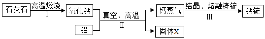
（1）石灰石的主要成分是 碳酸钙 。
（2）Ⅱ中反应有两种产物，固体X一定含有氧元素和铝元素，从元素守恒角度说明理由 反应前有钙元素、氧元素和铝元素，生成了钙，则固体X中一定有氧元素和铝元素 。
（3）装置Ⅲ中发生的是 物理 （填“物理”或“化学”）变化。
【分析】（1）根据石灰石的主要成分，进行分析解答。
（2）根据化学反应前后元素种类不变，进行分析解答。
（3）装置Ⅲ中钙蒸气结晶、熔融、铸锭，得到钙锭，进行分析解答。
【解答】解：（1）石灰石的主要成分是碳酸钙。
（2）Ⅱ中反应有两种产物，固体X一定含有氧元素和铝元素，反应前有钙元素、氧元素和铝元素，生成了钙，所以固体X中一定有氧元素和铝元素。
（3）装置Ⅲ中钙蒸气结晶、熔融、铸锭，得到钙锭，没有新物质生成，属于物理变化。
故答案为：
（1）碳酸钙；
（2）反应前有钙元素、氧元素和铝元素，生成了钙，则固体X中一定有氧元素和铝元素；
（3）物理。
【点评】本题难度不大，理解真空热还原法生产钙的主要转化过程图，掌握质量守恒定律、石灰石的主要成分、物理变化和化学变化的判别方法等是正确解答本题的关键。
31．（3分）高纯CO可用于半导体领域某些芯片的刻蚀，利用甲酸（HCOOH）制取高纯CO的主要流程如图：
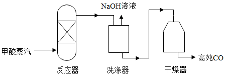
（1）甲酸中碳元素和氧元素的质量比为 3：8 。
（2）反应塔中甲酸分解的微现示意图如图，在方框中补全另一种产物的微粒图示 。
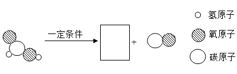
（3）反应塔中发生副反应产生微量CO2。洗涤器中加入NaOH溶液的目的是中和未反应的甲酸蒸气，并除去CO2，NaOH与CO2反应的化学方程式为 CO2+2NaOH＝Na2CO3+H2O 。
【分析】（1）根据化合物中各元素质量比＝各原子的相对原子质量×原子个数之比，进行分析解答。
（2）根据化学反应前后，原子的种类和数目不变，进行分析解答。
（3）根据二氧化碳和氢氧化钠溶液反应生成碳酸钠和水，进行分析解答。
【解答】解：（1）甲酸中碳元素和氧元素的质量比为12：（16×2）＝3：8。
（2）化学反应前后，原子的种类和数目不变，由甲酸分解的微现示意图，反应物中含有1个碳原子、2个氧原子、2个氢原子，生成物中含有1个碳原子、1个氧原子，所以还少1个氧原子和2个氢原子，所以另一种产物的微粒图示是一个水分子，其微观示意图为。
（3）二氧化碳和氢氧化钠溶液反应生成碳酸钠和水，反应的化学方程式是CO2+2NaOH＝Na2CO3+H2O。
故答案为：
（1）3：8；
（2）；
（3）CO2+2NaOH＝Na2CO3+H2O。
【点评】本题有一定难度，理解题意，灵活运用质量守恒定律、化学式的有关计算、化学方程式的书写方法等是正确解答本题的关键。
四、【基本实验及其原理分析】
32．（4分）根据如图回答问题。
（1）仪器a的名称是 酒精灯 。
（2）加热KMnO4制取O2的化学方程式为 2KMnO4K2MnO4+MnO2+O2↑ 。
（3）收集O2的装置是 （填序号）。
（4）将带火星的木条放在瓶口，若观察到 带火星的木条复燃 ，说明瓶中已充满O2。
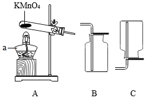
【分析】（1）对常见仪器名称的考查；
（2）对实验室制取氧气化学方程式的考查；
（3）依据氧气密度与空气密度相对大小进行分析；
（4）考查氧气验满的方法及现象。
【解答】解：（1）仪器a的名称是酒精灯；
（2）加热KMnO4制取O2的化学方程式为：2KMnO4K2MnO4+MnO2+O2↑；
（3）因为氧气密度大于空气密度，所以应该选择向上排空气发收集氧气，故选装置B；
（4）氧气能使带火星的木条复燃，所以现象是带火星的木条复燃；
故答案为：（1）酒精灯；
（2）2KMnO4K2MnO4+MnO2+O2↑；
（3）B；
（4）带火星的木条复燃。
【点评】本题是对基础知识的考查，难度不大。
33．（2分）用如图实验（夹持仪器已略去）研究铁的性质。
（1）实验1，观察到蜡片熔化，说明铁具有的性质是 导热性 。
（2）实验2，反应的化学方程式为 Fe+2HCl＝FeCl2+H2↑ 。
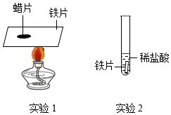
【分析】（1）根据金属的物理性质回答。
（2）根据反应原理书写化学方程式。
【解答】解：（1）实验1，观察到蜡片熔化，说明铁具有的性质是导热性。
（2）实验2是铁与盐酸反应生成氯化亚铁和氢气，反应的化学方程式为：Fe+2HCl＝FeCl2+H2↑。
故答案为：
（1）导热性；
（2）Fe+2HCl＝FeCl2+H2↑。
【点评】本题考查了金属的物理性质和化学性质及化学方程式书写，基础性强，难度不大。
34．（2分）如图是去除粗盐中难溶性杂质实验的三步操作。
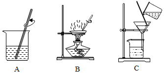
（1）三步操作的正确顺序是 ACB （填序号）。
（2）B中，用璃棒不断搅拌的目的是 防止局部温度过高，造成液体飞溅 。
【分析】（1）根据粗盐提纯是将粗盐中含有的泥沙等不溶物除去，进行分析解答。
（2）根据B是蒸发操作，进行分析解答。
【解答】解：（1）粗盐的主要成分是氯化钠，粗盐提纯是通过溶解（把不溶物与食盐初步分离）、过滤（把不溶物彻底除去）、蒸发（食盐从溶液中分离出来而得到食盐）得到精盐的过程，正确的操作顺序是ACB。
（2）B是蒸发操作，用璃棒不断搅拌的目的是防止局部温度过高，造成液体飞溅。
故答案为：
（1）ACB；
（2）防止局部温度过高，造成液体飞溅。
【点评】本题难度不大，掌握粗盐提纯的原理、实验步骤（溶解、过滤、蒸发）、注意事项等是正确解答本题的关键。
35．（3分）用如图装置研究酸、碱的性质。
（1）向1中滴加Na2CO3溶液，观察到的现象是 澄清石灰水变浑浊 。
（2）向2、3中滴加无色酚酞溶液，溶液变红的是 2 （填序号）；再向3中滴加NaOH溶液，NaOH与盐酸反应的化学方程式为 NaOH+HCl＝NaCl+H2O 。
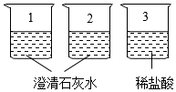
【分析】（1）从碳酸钠与澄清石灰水反应的生成物及现象进行分析；
（2）从酸碱指示剂与酸和碱作用如何变色进行分析。
【解答】解：（1）向1中滴加Na2CO3溶液，发生反应的化学方程式为：Na2CO3+Ca（OH）2＝CaCO3↓+2NaOH，所以现象是澄清石灰水变浑浊；
（2）酸不能使无色酚酞溶液变色，碱使无色酚酞溶液变红色，所以变红色的是2；NaOH与盐酸反应的化学方程式为：NaOH+HCl＝NaCl+H2O；
故答案为：（1）澄清石灰水变浑浊；
（2）2；NaOH+HCl＝NaCl+H2O。
【点评】本题是对基础知识的考查，难度不大。
36．（2分）用如图实验验证可燃物燃烧的条件，已知：白磷的着火点为40℃。
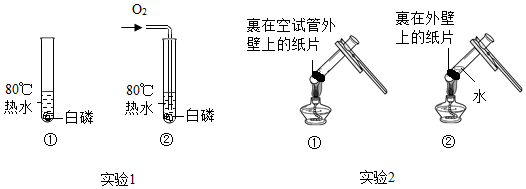
（1）实验1，能验证可燃物燃烧需要O2的现象是 ①中白磷不燃烧，②中的白磷燃烧 。
（2）实验2，①中纸片燃烧，②中纸片未燃烧，②中纸片未燃烧的原因是 水吸收了部分的热量，未达到纸片的着火点 。
【分析】根据燃烧的条件进行分析解答，燃烧需要同时满足三个条件：①可燃物、②氧气或空气、③温度要达到着火点。
【解答】解：（1）实验1，能验证可燃物燃烧需要O2的现象是①中白磷不能接触氧气，不燃烧，②中的白磷接触到氧气，能燃烧。
（2）由燃烧的条件可知，实验2，①中纸片燃烧，②中纸片未燃烧，②中纸片未燃烧的原因是：水吸收了部分的热量，降低了温度，未达到纸片的着火点。
故答案为：（1）①中白磷不燃烧，②中的白磷燃烧；
（2）水吸收了部分的热量，未达到纸片的着火点。
【点评】本题难度不大，灵活运用燃烧需要同时满足三个条件并能灵活运用是正确解答本题的关键。
37．（3分）用如图实验验证CO2的性质。
（1）实验室制取CO2的化学方程式为 CaCO3+2HCl═CaCl2+CO2↑+H2O 。
（2）观察到短蜡烛熄灭后，关闭K，片刻后长蜡烛熄灭，由此得到的结论是 二氧化碳密度比空气大，不燃烧也不支持燃烧 。
（3）观察到纸花变红，由此并不能得出“CO2能与水发生化学反应”的结论，理由是 没有排除二氧化碳使纸花变红的可能，没有对照试验 。
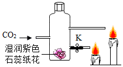
【分析】（1）根据实验室制取CO2分析；
（2）根据二氧化碳的性质分析；
（3）根据CO2与水发生化学反应分析。
【解答】解：（1）反应物是碳酸钙和盐酸，生成物是氯化钙、水和二氧化碳，所以化学方程式是：CaCO3+2HCl═CaCl2+H2O+CO2↑；
（2）蜡烛由下至上依次熄灭，说明二氧化碳具有的化学性质是不能燃烧，不支持燃烧，且二氧化碳密度比空气大；
（3）不能得出“CO2能与水发生化学反应”的结论是因为没有排除二氧化碳使纸花变红的可能，没有对照试验；
故答案为：（1）CaCO3+2HCl═CaCl2+CO2↑+H2O；
（2）二氧化碳密度比空气大，不燃烧也不支持燃烧；
（3）没有排除二氧化碳使纸花变红的可能，没有对照试验.
【点评】合理设计实验，科学地进行实验、分析实验，是得出正确实验结论的前提，因此要学会设计实验、进行实验、分析实验，为学好化学知识奠定基础。
五、【科学探究】
38．（7分）硬水加热时易产生水垢，很多工业用水需要对硬水进行软化处理。小组同学利用1.5%的肥皂水比较水的硬度。
【查阅资料】硬水含较多可溶性钙、镁化合物；软水不含或含较少可溶性钙，镁化合物。
Ⅰ、探究水的硬度、肥皂水的用量与产生泡沫量的关系
【进行实验】向蒸馏水中加入CaCl2和MgCl2的混合溶液，配制两种不问硬度的硬水。
用蒸馏水和两种硬水完成三组实验，记录如下：
组别 | 第1组 | 第2组 | 第3组 |
实验操作 | 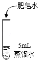 | 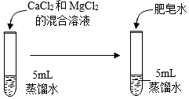 |
实验序号 | ① | ② | ③ | ④ | ⑤ | ⑥ | ⑦ | ⑧ | ⑨ |
混合溶液用量/滴 | 0 | 0 | 0 | 1 | x | 1 | 2 | 2 | 2 |
肥皂水用量/滴 | 5 | 10 | 20 | 5 | 10 | 20 | 5 | 10 | 20 |
产生泡沫量 | 少 | 多 | 很多 | 无 | 少 | 多 | 无 | 无 | 少 |
【解释与结论】
（1）对比②和⑧可知，肥皂水能区分软水和硬水，依据的现象是 产生泡沫多少 。
（2）设计第2组实验时，为控制水的硬度相同，⑤中x应为 1 。
（3）第2组实验的目的是 第2组实验以肥皂水为变量，探究肥皂水多少与产生泡沫量的关系 。
（4）由上述三组实验得到的结论是 硬水中加肥皂水泡沫少，软水中加肥皂水泡沫多 。
Ⅱ、比较不同水样的硬度
【进行实验】用四种水样完成实验，记录观察到泡沫产生时所需肥皂水的用量。
实验操作 | 水样 | 肥皂水用量/滴 |
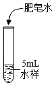 | 市售纯净水 | 2 |
煮沸后的自来水 | 6 |
自来水 | 9 |
湖水 | 14 |
【解释与结论】
（5）硬度最大的水样是 湖水 。
（6）由上述实验可知，能将自来水硬度降低的方法有 煮沸 。
（7）继续实验，发现山泉水的硬度大于自来水的硬度，其实验方案为 另取相同量山泉水，滴加肥皂水记录产生泡沫所需肥皂水量，大于自来水所需肥皂水量，说明山泉水硬度大于自来水 。
【分析】（1）根据实验现象分析回答此题；
（2）根据对比实验唯一变量原则确定数值；
（3）根据实验中变量分析回答此题；
（4）根据实验现象总结实验结论；
（5）根据实验数据分析回答此题；
（6）根据实验信息分析回答此题；
（7）根据肥皂水在不同硬度水中的实验现象分析回答此题。
【解答】解：（1）②和⑧不同实验现象是产生的泡沫多少不同，因此据此判断区分软硬水；
故答案为：产生泡沫多少。
（2）根据对比实验唯一变量的原则可知，x加入混合液体积相同，也是1滴；
故答案为：1。
（3）第2组实验中验证不同催化剂 肥皂水的用量，产生泡沫量不同，因此是探究肥皂水用量与产生泡沫量的关系；
故答案为：第2组实验以肥皂水为变量，探究肥皂水多少与产生泡沫量的关系。
（4）从3组实验可以看出，当在相同体积蒸馏水加入不同量氯化钙和氯化镁溶液，同时加入相同量的肥皂水，则可以看出蒸馏水泡沫多，而加入氯化钙和氯化镁体积越多的泡沫越少，而水的硬度根据钙。镁离子含量来表示，所以说明硬水加入肥皂水泡沫少，软水加入肥皂水泡沫多；
故答案为：硬水中加肥皂水泡沫少，软水中加肥皂水泡沫多。
（5）根据题目数据可以看出，湖水硬度最大；
故答案为：湖水。
（6）根据煮沸自来水与自来水加入肥皂水的体积，可以知道煮沸可以降低水的硬度；
故答案为：煮沸。
（7）为了确保只改变水质，其他实验条件一致，因此需要取相同量的山泉水，然后滴加肥皂水，记录加入肥皂水产生泡沫时，使用的量，与自来水的数据相比，得出实验结论；
故答案为：另取相同量山泉水，滴加肥皂水记录产生泡沫所需肥皂水量，大于自来水所需肥皂水量，说明山泉水硬度大于自来水。
【点评】在解此类题时，首先要将题中的知识认知透，然后结合学过的知识进行解答。
五、【实际应用定量计算】
39．（3分）《天工开物》中记载了金属的冶炼技术。在锌的冶炼方法中，主要反应之一为ZnO+COZn+CO2。若制得65kgZn，计算参加反应的ZnO的质量（写出计算过程及结果）。
【分析】根据生成锌的质量，由反应的化学方程式列式计算即可。
【解答】解：设参加反应氧化锌质量为x
ZnO+COZn+CO2
81 65
x 65kg
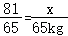
x＝81kg答：参加反应的ZnO的质量81kg。
【点评】本题难度不大，掌握根据化学方程式的计算即可正确解答本题，解题时要注意解题的规范性。